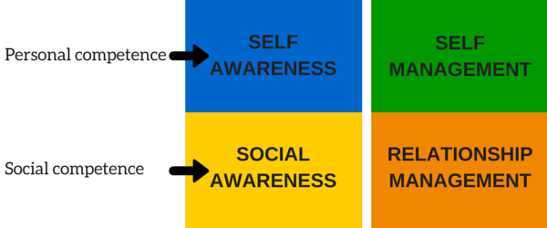

IQ & EQ
What is Emotional Intelligence
Daniel Goleman, psychologist, lecturer, and science journalist and also author of Emotional Intelligence,
defines Emotional Intelligence (EQ) as the ability to identify, assess, and control one’s own
emotions,
the emotions of others, and that of groups
.
In other words is the ability to recognize
and
understand emotions in yourself and others, and use this awareness to manage your behavior
and relationships.
There are four fundamental aspects of EQ:
- Self-awareness : it's about recognizing your emotions. When people with a Low EQ get angry or sad they will not look at why they are feeling in that way : usually they blame others, or become depressed or bullies. Oppositely, people with High EQ try to understand why their are feeling that way, what’s causing it and they will try to get better.
- Self-management : it’s about how you manage yourself. People with a Low EQ that become angry or sad, will shout at other people or start a fight, or they redirect their emotions in a self-destructive way. People with High EQ instead, will try to manage their emotions, take actions. For example they would deal with a stressed situation by working-out or meeting people that can cheer them up. up
- Social-awareness : this skill is about treating people according to their emotional reactions. A person with a Low EQ is not able to see social cues and micro behaviors of others, it usually goes wherever the wind takes him/her and sometimes other people can take advantage of that. On the contrary, a person with an High Eq listens to others and put words in context, ask questions about the other people, read between the lines.
- Social-management : it's about managing relationships, finding common ground and feeling a rapport with others. A person with a Low EQ has problems finding friends or like-minded people, or getting its point during a conversation. It often feels misunderstood and it will blame it on superficial things (for example not enough money). A person with a High-Eq uses its intuitions and adapts if necessary, find a win-win situation, common ground in order to connect with another person.